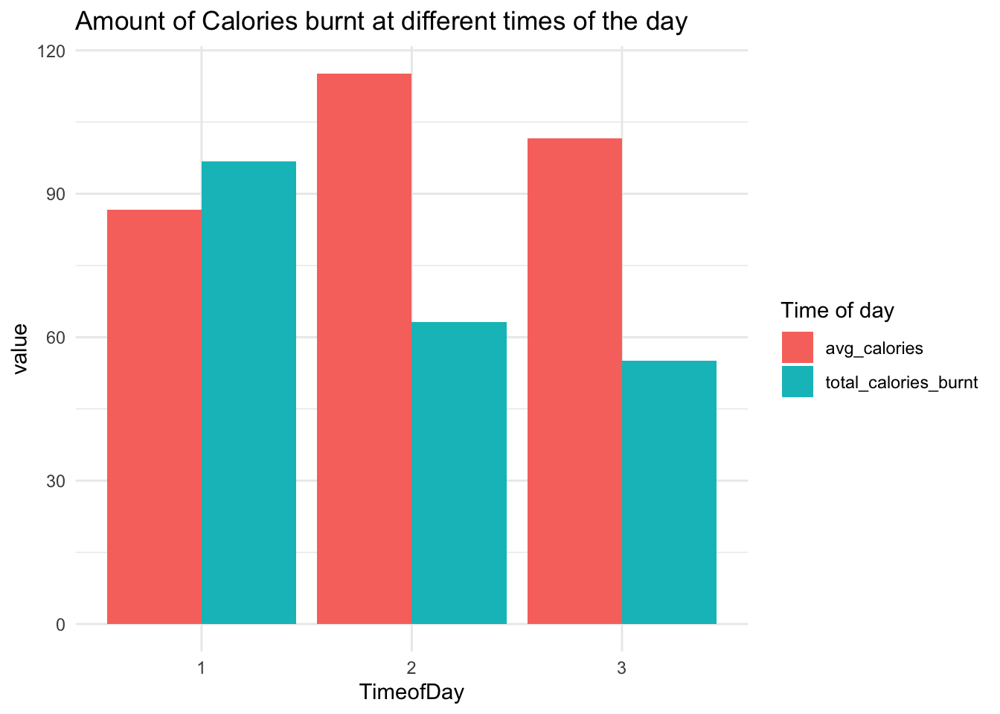
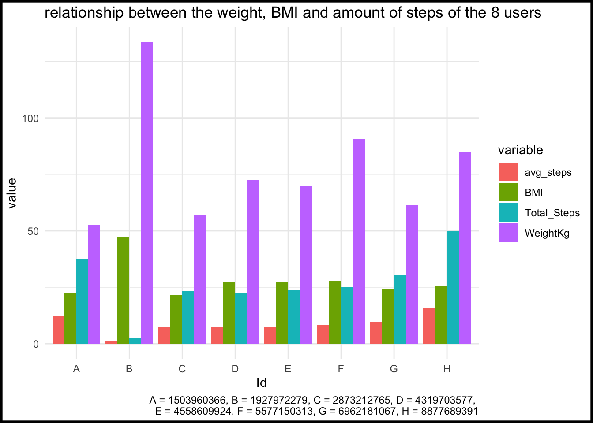
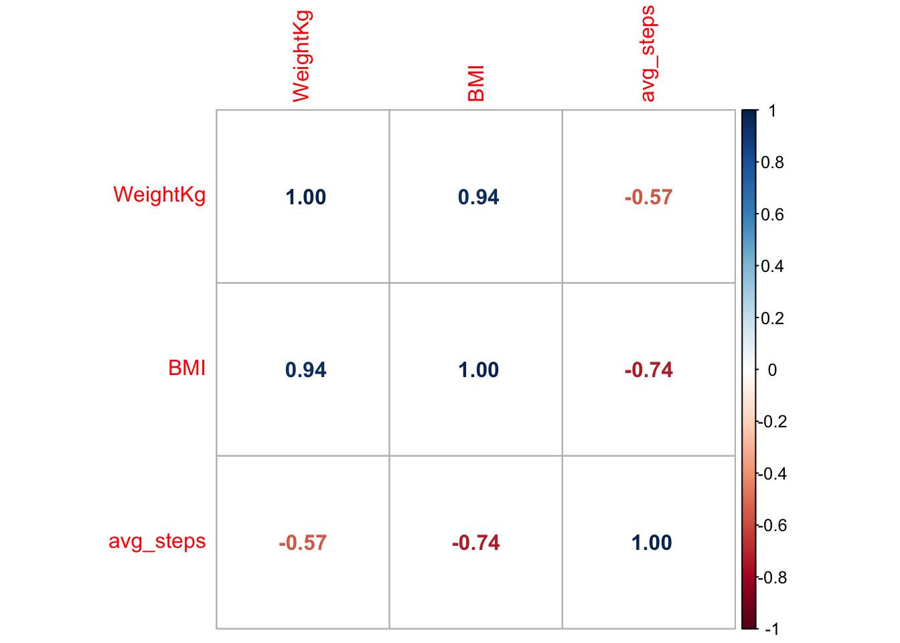
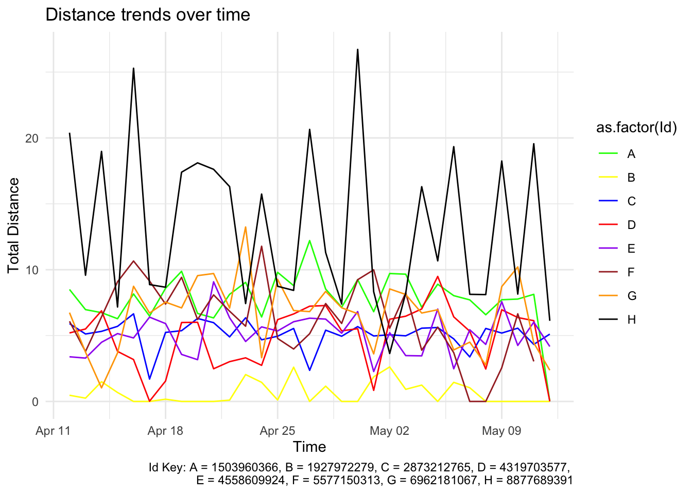
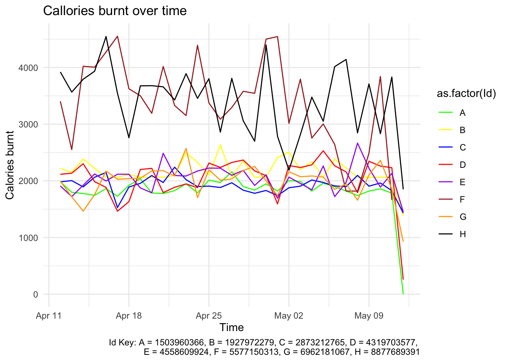
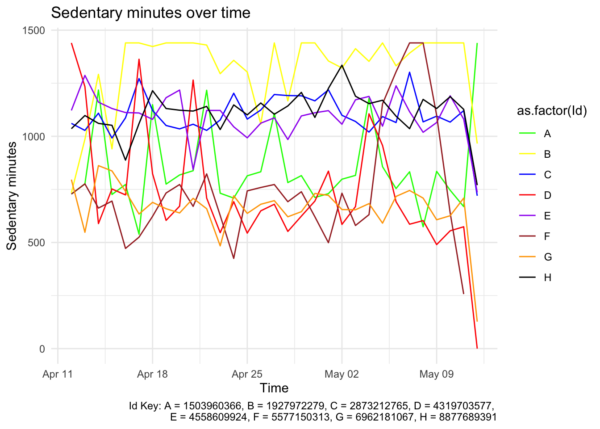
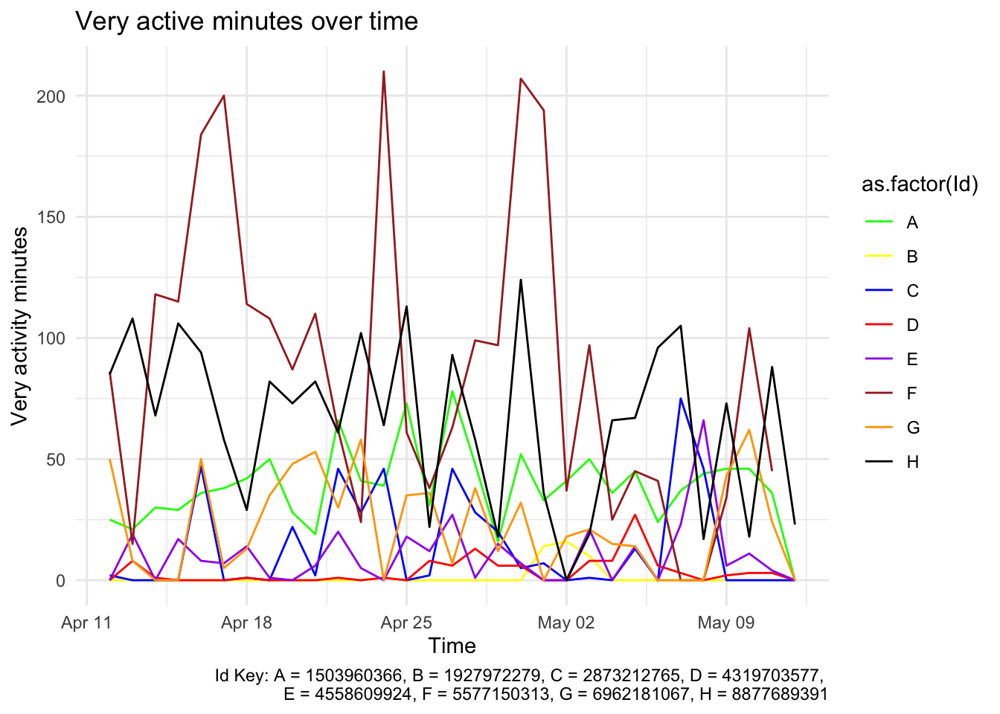

Bellabeat is a a high-tech manufacturer of health-focused products for women, and meet different characters and team members
bellabeat offers four products:
Bellabeat app: An app that provides the users with health data related to their activity, sleep, stress, menstrual cycle, and mindfulness habits. This data can help users better understand their current habits and make healthy decisions. The Bellabeat app connects to their line of smart wellness products.
Leaf: Bellabeat’s classic wellness tracker can be worn as a bracelet, necklace, or clip. The Leaf tracker connects to the Bellabeat app to track activity, sleep, and stress.
Time: This wellness watch combines the timeless look of a classic timepiece with smart technology to track user activity, sleep, and stress. The Time watch connects to the Bellabeat app to provide you with insights into your daily wellness.
Spring: This is a water bottle that tracks daily water intake using smart technology to ensure that you are appropriately hydrated throughout the day. The Spring bottle connects to the Bellabeat app to track your hydration levels.
Bellabeat membership: Bellabeat also offers a subscription-based membership program for users. Membership gives users 24/7 access to fully personalized guidance on nutrition, activity, sleep, health and beauty, and mindfulness based on their lifestyle and goals.
Problem statement
The aim of this analysis is to analyse smart device usage data in order to gain insight into how consumers use non-Bellabeat smart devices. I will be focusing on how much activity the users undertake. The wellness watch tracks activity, sleep and stress levels.
The questions this analysis answers are:
What are some trends in smart device usage?
How could these trends apply to Bellabeat customers?
How could these trends help influence Bellabeat marketing strategy?
In answering these questions, i will analyse how the activity trends over time, I will also determine how the different trend in different customers affect theses customers as well as possible limitations that are observed and advice will be given to the Bellbeat marketing strategy
Data sourcing and preparation
For this project, a public data from kaggle will be used. The dataset contains personal fitness tracker from thirty fitbit users who have consented to the submission and use of their personal tracker data.
The data is stored locally on my computer as it is a smaller dataset. I also used Gihub as my version control platform. The data is in a wide format which is compatible with r whch is the programming language i used for this analysis and because it follows the tidy data principles
For this project, i used r language as previously mentioned, as well as some of its packages for data wrangling and visualization. I also used quarto to create the report.
Data Validation and Cleaning
To maintain data integrity, I ensure that each column of the datasets are consistent and conform to predefined rules such as data format and types.
In cleaning the data, I ensured i removed missing values, outliers, duplicates and checked for consistent formatting. I used the dplyr and tidyr packages from r to achieve this
#load necessary packaged to the librarylibrary(tidyr)library(dplyr)
Attaching package: 'dplyr'
The following objects are masked from 'package:stats':
filter, lag
The following objects are masked from 'package:base':
intersect, setdiff, setequal, union
library(lubridate)
Attaching package: 'lubridate'
The following objects are masked from 'package:base':
date, intersect, setdiff, union
library(ggplot2)library(corrplot)
corrplot 0.92 loaded
I imported the data using read_csv function, since the datasets were all in csv format
Dataset description
1. daily Activity merged
About data: This is a summary of all activity measurements in a day
This dataset has 16 columns From the head of the first dataset, the date is in a character format and the id is in a double format it is necessary to change the Id to character and the ActivityDate to date to prevent errors. This action will be done for the other datasets as well
#convert Id and the Activitydate column to character format and date format respectivelydailyActivity_merged$Id <-as.character(dailyActivity_merged$Id)dailyActivity_merged$ActivityDate <-ymd(dailyActivity_merged$ActivityDate)#check data type to see that the change has been madestr(dailyActivity_merged)
# number of Ids observedlength(unique(dailyActivity_merged$Id))
[1] 33
To avoid repeating codes, I created functions that can be reused to check for missing values and duplications
check for missing values
# function to check for missing valuesany_missing <-function(data){is_missing <-any(is.na(data))if (is_missing){return("There is a missing value")} else {return("There is no missing value")}}any_missing(dailyActivity_merged)
[1] "There is no missing value"
check for duplicates
Checked for duplicates in the dataset. I created a function that can be reused to check for duplicates in the other dataset
any_duplicates <-function(dataset){ is_duplicates <-any(duplicated(dataset) |duplicated(dataset, fromLast =TRUE))if (is_duplicates) {return ("There are duplicate rows in the data.")} else {return("There are no duplicate rows in the data.")}}
any_duplicates(dailyActivity_merged)
[1] "There are no duplicate rows in the data."
2. dailyintensities_merged
About data: This dataset is a record of intensity of activities (time and distance)
The dataset have been validated and cleaned. Making them ready for analysis
Data Analysis
In this aspect of the report, we will be analysing the datasets to see if there is a correlation between the cuatomers weight, BMI and their exercise activity
one of the limitations observed is that although 33 users were supposed to be gotten, some dataset had less than 33 users observed.
For instance, weightLogInfo_merged just had 8 users, sleepDay_merged had 24 users.
First, I will be carrying out a summary analysis on the datasets and then carry out a customer analysis focusing on the users that have their weight registered
macro summary of how the users use the app
Analyse day people take the most activity
dailyActivity_merged$day <-wday(dailyActivity_merged$ActivityDate)# create a subset from the dailyActivity_merged data and then a new column with the respective day of the week. # this will be derived using the lubridate packagehighest_step <- dailyActivity_merged %>%group_by(day) %>%summarise(Total_Steps =sum(TotalSteps)) %>%select(day, Total_Steps) %>%mutate(Total_Steps = Total_Steps*0.001)highest_step$day <-weekdays(as.Date(highest_step$day, origin ="2023-07-01"))highest_step$day <-factor(highest_step$day, levels =c("Sunday", "Monday", "Tuesday", "Wednesday", "Thursday", "Friday", "Saturday"))ggplot(highest_step, aes(x = day, y = Total_Steps, fill = day)) +geom_bar(stat ="identity") +labs(title ="steps taken (in thousands)", x ="Day", y ="Total steps (seconds)") +theme_minimal()
hourlySteps_merged_td$TimeofDay <-as.factor(hourlySteps_merged_td$TimeofDay)# convert to long datahourlySteps_merged_long <-gather(hourlySteps_merged_td, key ="variable", value ="value", -TimeofDay)ggplot(hourlySteps_merged_long, aes(x = TimeofDay, y = value, fill = variable)) +geom_bar(stat ="identity", position ="dodge")+# scale_fill_manual(values = c("1" = "#007fff", "2" = "#324ab2", "3" = "#008080"), # labels = c("1" = "Morning", "2" = "Afternoon", "3" = "Evening"))+labs(title ="Amount of steps taken at different times of the day",fill ="Time of day") +theme_minimal()
hourlyCalories_merged_td$TimeofDay <-as.factor(hourlyCalories_merged_td$TimeofDay)# convert to long datahourly_calories_long <-gather(hourlyCalories_merged_td, key ="variable", value ="value", -TimeofDay)ggplot(hourly_calories_long, aes(x = TimeofDay, y = value, fill = variable)) +geom_bar(stat ="identity", position ="dodge")+# scale_fill_manual(values = c("1" = "#007fff", "2" = "#324ab2", "3" = "#008080"), # labels = c("1" = "Morning", "2" = "Afternoon", "3" = "Evening"))+labs(title ="Amount of Calories burnt at different times of the day",fill ="Time of day") +theme_minimal()

what time of the day do people fall asleep the ost
graph to show the relationship between weight, BMI, and steps taken
#reassigned IDs with new names to make plot viewbablemerged_weight_steps$Id <-factor(merged_weight_steps$Id,levels =unique(merged_weight_steps$Id),labels =c("A", "B", "C", "D", "E", "F", "G", "H"))#merged_weight_steps$Id <- factor(merged_weight_steps$Id,#levels = unique(merged_weight_steps$Id)#)head(merged_weight_steps)
# A tibble: 6 × 5
Id WeightKg BMI Total_Steps avg_steps
<fct> <dbl> <dbl> <dbl> <dbl>
1 A 52.6 22.6 37.6 12.1
2 B 134. 47.5 2.84 0.916
3 C 57 21.6 23.4 7.56
4 D 72.4 27.4 22.5 7.27
5 E 69.6 27.2 23.8 7.69
6 F 90.7 28 24.9 8.30
BMI_arranged <- merged_weight_steps %>%arrange(BMI)cat("In ascending order, the Ids arranged according to their BMI is", as.character(BMI_arranged$Id))
In ascending order, the Ids arranged according to their BMI is C A G H E D F B
#Key: A = 1503960366, B = 1927972279, C = 2873212765, D = 4319703577, E = 4558609924, F = 5577150313, G = 6962181067, H = 8877689391 merged_weight <-gather(merged_weight_steps, key = variable, value ="value", -Id)ggplot(merged_weight, aes(x = Id, y = value, fill = variable)) +geom_bar(stat ="identity", position ="dodge", width = .9) +labs(title ="relationship between the weight, BMI and amount of steps of the 8 users", caption ="A = 1503960366, B = 1927972279, C = 2873212765, D = 4319703577, E = 4558609924, F = 5577150313, G = 6962181067, H = 8877689391")+theme_minimal() +theme(plot.background =element_rect(linewidth =2))

From the graph below, it seems to suggest that there might be a relationship between the weight and the steps taken. To test this hypothesis, the correlation between the total steps taken, weight and BMI is checked using a correlation matrix
#correlation between BMI and total steps using a correlation matriccorr_weight <-cor(merged_weight_steps[,c(-1, -4)])corrplot(corr_weight, method ="number")

The graph shows there is a negative correlation between the avg steps of the users and the BMI/Weight with the BMI being stronger. i.e the higher the BMI, the lesser the average steps**
To further investigate this hypothesis, I will be analyzing the subset of people that have their weights recorder to see how much activity they take
#to allow the users to be easily remembered, i will assign an alphabet to their IDsweightLogInfo_merged$Id <-factor(weightLogInfo_merged$Id,levels =unique(weightLogInfo_merged$Id),labels =c("A", "B", "C", "D", "E", "F", "G", "H"))activity$Id <-factor(activity$Id,levels =unique(activity$Id),labels =c("A", "B", "C", "D", "E", "F", "G", "H"))
weight trends over time
I first checked their weight trend over time
ggplot(weightLogInfo_merged, aes(x = Date, y = WeightKg, color =as.factor(Id))) +geom_line() +labs(title ="weight trends over time", x ="Time", y ="weight (Kg)" , caption ="Id Key: A = 1503960366, B = 1927972279, C = 2873212765, D = 4319703577, E = 4558609924, F = 5577150313, G = 6962181067, H = 8877689391") +scale_color_manual(values =c("A"="green", "B"="yellow", "C"="blue", "D"="red", "E"="purple", "F"="brown", "G"="orange", "H"="black" )) +#scale_y_datetime(date_labels = "%b %d") +theme_minimal()
ggplot(activity, aes(x = ActivityDate, y = TotalDistance, color =as.factor(Id))) +geom_line() +labs(title ="Distance trends over time", x ="Time", y ="Total Distance", caption ="Id Key: A = 1503960366, B = 1927972279, C = 2873212765, D = 4319703577, E = 4558609924, F = 5577150313, G = 6962181067, H = 8877689391") +scale_color_manual(values =c("A"="green", "B"="yellow", "C"="blue", "D"="red", "E"="purple", "F"="brown", "G"="orange", "H"="black" )) +#scale_y_datetime(date_labels = "%b %d") +#scale_color_discrete(name = "Id") +theme_minimal()

Calories burnt over time
ggplot(activity, aes(x = ActivityDate, y = Calories, color =as.factor(Id))) +geom_line() +labs(title ="Callories burnt over time", x ="Time", y ="Calories burnt", caption ="Id Key: A = 1503960366, B = 1927972279, C = 2873212765, D = 4319703577, E = 4558609924, F = 5577150313, G = 6962181067, H = 8877689391") +scale_color_manual(values =c("A"="green", "B"="yellow", "C"="blue", "D"="red", "E"="purple", "F"="brown", "G"="orange", "H"="black" )) +#scale_y_datetime(date_labels = "%b %d") +#scale_color_discrete(name = "Id") +theme_minimal()

# boxplotA <-subset(activity, Id =="A")ggplot(A, aes(x =1, y = Calories)) +geom_boxplot()
Call:
lm(formula = Calories ~ day, data = A)
Residuals:
Min 1Q Median 3Q Max
-1481.60 -60.80 10.75 65.97 477.40
Coefficients:
Estimate Std. Error t value Pr(>|t|)
(Intercept) 1769.00 175.18 10.098 4.06e-10 ***
day2 170.25 247.74 0.687 0.499
day3 198.80 235.03 0.846 0.406
day4 99.80 235.03 0.425 0.675
day5 -287.40 235.03 -1.223 0.233
day6 57.25 247.74 0.231 0.819
day7 126.00 247.74 0.509 0.616
---
Signif. codes: 0 '***' 0.001 '**' 0.01 '*' 0.05 '.' 0.1 ' ' 1
Residual standard error: 350.4 on 24 degrees of freedom
Multiple R-squared: 0.21, Adjusted R-squared: 0.01253
F-statistic: 1.063 on 6 and 24 DF, p-value: 0.4112
sedentary minutes over time
ggplot(activity, aes(x = ActivityDate, y = SedentaryMinutes, color =as.factor(Id))) +geom_line() +labs(title ="Sedentary minutes over time", x ="Time", y ="Sedentary minutes", caption ="Id Key: A = 1503960366, B = 1927972279, C = 2873212765, D = 4319703577, E = 4558609924, F = 5577150313, G = 6962181067, H = 8877689391") +scale_color_manual(values =c("A"="green", "B"="yellow", "C"="blue", "D"="red", "E"="purple", "F"="brown", "G"="orange", "H"="black" )) +#scale_y_datetime(date_labels = "%b %d") +#scale_color_discrete(name = "Id") +theme_minimal()

Very Active minutes
ggplot(activity, aes(x = ActivityDate, y = VeryActiveMinutes, color =as.factor(Id))) +geom_line() +labs(title ="Very active minutes over time", x ="Time", y ="Very activity minutes", caption ="Id Key: A = 1503960366, B = 1927972279, C = 2873212765, D = 4319703577, E = 4558609924, F = 5577150313, G = 6962181067, H = 8877689391") +scale_color_manual(values =c("A"="green", "B"="yellow", "C"="blue", "D"="red", "E"="purple", "F"="brown", "G"="orange", "H"="black" )) +scale_x_date( date_labels ="%b %d") +#scale_color_discrete(name = "Id") +theme_minimal()

Result and Insights
Insights from summary analysis
Users take the most steps on Tuesdays and the least steps on thursdays. For calories, People burn the most calories in the mornings but on an average, they burn more aclories in the afternoons.
The analysis has shown that there is a negetive correlation between the BMI and activity levels of the users which was the basis of our hypothesis that the the lower the weight of the users, the higher the activity level of that users. This led me to carry out further analysis to see the progression of different variables over time.
Reccommendation and Limitations
From this analysis, one apparent limitation is the small number of weight/BMI data recorded. It is clear that there is no motivation for users to record their weight/BMI and that is a key determinant of good health. It also aids in showing how much impact the activity the users have on their weight.